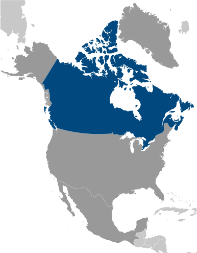
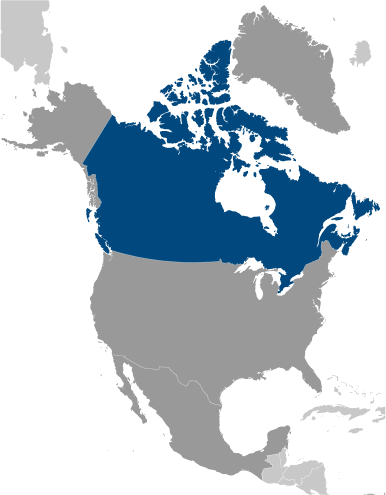

country name
- conventional long form: none
- conventional short form: Canada
- etymology: the country name likely derives from the St. Lawrence Iroquoian word "kanata"
meaning village or settlement
government type
federal parliamentary democracy (Parliament of Canada) under a constitutional monarchy;
a Commonwealth realm; federal and state authorities and responsibilities regulated
in constitution
capital
- name: Ottawa
- geographic coordinates: 45 25 N, 75 42 W
- time difference: UTC-5 (same time as Washington, DC, during Standard Time)
- daylight saving time: +1hr, begins second Sunday in March; ends first Sunday in November
- etymology: the city lies on the south bank of the Ottawa River, from which it derives
its name; the river name comes from the Algonquin word "adawe" meaning "to trade"
and refers to the indigenous peoples who used the river as a trade highway note: Canada
has six time zones
administrative divisions
10 provinces and 3 territories*; Alberta, British Columbia, Manitoba, New Brunswick,
Newfoundland and Labrador, Northwest Territories*, Nova Scotia, Nunavut*, Ontario,
Prince Edward Island, Quebec, Saskatchewan, Yukon*
independence
1 July 1867 (union of British North American colonies); 11 December 1931 (recognized
by UK per Statute of Westminster)
national holiday
Canada Day, 1 July (1867)
constitution
- history: consists of unwritten and written acts, customs, judicial decisions, and
traditions dating from 1763; the written part of the constitution consists of the
Constitution Act of 29 March 1867, which created a federation of four provinces, and
the Constitution Act of 17 April 1982
- amendments: proposed by either house of Parliament or by the provincial legislative
assemblies; there are 5 methods for passage though most require approval by both houses
of Parliament, approval of at least two thirds of the provincial legislative assemblies
and assent and formalization as a proclamation by the governor general in council;
the most restrictive method is reserved for amendments affecting fundamental sections
of the constitution, such as the office of the monarch or the governor general, and
the constitutional amendment procedures, which require unanimous approval by both
houses and by all the provincial assemblies, and assent of the governor general in
council; amended 11 times, last in 2011 (Fair Representation Act, 2011) (2018)
legal system
common law system except in Quebec, where civil law based on the French civil code
prevails
international law organization participation
accepts compulsory ICJ jurisdiction with reservations; accepts ICCt jurisdiction
citizenship
- citizenship by birth: yes
- citizenship by descent only: yes
- dual citizenship recognized: yes
- residency requirement for naturalization: minimum of 3 of last 5 years resident in
Canada
suffrage
18 years of age; universal
executive branch
- chief of state: Queen ELIZABETH II (since 6 February 1952); represented by Governor
General Julie PAYETTE (since 2 October 2017)
- head of government: Prime Minister Justin Pierre James TRUDEAU (Liberal Party) (since
4 November 2015)
- cabinet: Federal Ministry chosen by the prime minister usually from among members
of his/her own party sitting in Parliament
- elections/appointments: the monarchy is hereditary; governor general appointed by
the monarch on the advice of the prime minister for a 5-year term; following legislative
elections, the leader of the majority party or majority coalition in the House of
Commons generally designated prime minister by the governor general
- note: the governor general position is largely ceremonial; Julie PAYETTE, a former
space shuttle astronaut, is Canada's fourth female governor general but the first
to have flown in space
legislative branch
- description: bicameral Parliament or Parlement consists of: Senate or Senat (105 seats;
members appointed by the governor general on the advice of the prime minister and
can serve until age 75) House of Commons or Chambre des Communes (338 seats; members
directly elected in single-seat constituencies by simple majority vote with terms
up to 4 years)
- elections: Senate - appointed; latest appointments in December 2018 House of Commons
- last held on 21 October 2019 (next to be held in October 2023)
- election results: Senate - composition as of December 2018 - men 51, women 54, percent
of women 51.4% House of Commons - percent of vote by party - CPC 34.4%, Liberal Party
33.1%, NDP 15.9%, Bloc Quebecois 7.7%, Greens 6.5%, other 2.4%; seats by party - Liberal
Party 157, CPC 121, NDP 24, Bloc Quebecois 32, Greens 4; composition - men 240, women
98, percent of women 29%; note - total Parliament percent of women 34.3%
judicial branch
- highest courts: Supreme Court of Canada (consists of the chief justice and 8 judges);
note - in 1949, Canada abolished all appeals beyond its Supreme Court, which prior
to that time, were heard by the Judicial Committee of the Privy Council (in London)
- judge selection and term of office: chief justice and judges appointed by the prime
minister in council; all judges appointed for life with mandatory retirement at age
75
- subordinate courts: federal level: Federal Court of Appeal; Federal Court; Tax Court;
federal administrative tribunals; Courts Martial; provincial/territorial level: provincial
superior, appeals, first instance, and specialized courts; note - in 1999, the Nunavut
Court - a circuit court with the power of a provincial superior court, as well as
a territorial court - was established to serve isolated settlements
political parties and leaders
Bloc Quebecois [Mario BEAULIEU] Conservative Party of Canada or CPC [Andrew SCHEER]
Green Party [Jo-Ann ROBERTS] Liberal Party [Justin TRUDEAU] New Democratic Party or
NDP [Jagmeet SINGH] People's Party of Canada [Maxime BERNIER]
international organization participation
ADB (nonregional member), AfDB (nonregional member), APEC, Arctic Council, ARF, ASEAN
(dialogue partner), Australia Group, BIS, C, CD, CDB, CE (observer), EAPC, EBRD, EITI
(implementing country), FAO, FATF, G-7, G-8, G-10, G-20, IADB, IAEA, IBRD, ICAO, ICC
(national committees), ICCt, ICRM, IDA, IEA, IFAD, IFC, IFRCS, IGAD (partners), IHO,
ILO, IMF, IMO, IMSO, Interpol, IOC, IOM, IPU, ISO, ITSO, ITU, ITUC (NGOs), MIGA, MINUSTAH,
MONUSCO, NAFTA, NATO, NEA, NSG, OAS, OECD, OIF, OPCW, OSCE, Pacific Alliance (observer),
Paris Club, PCA, PIF (partner), UN, UNCTAD, UNESCO, UNFICYP, UNHCR, UNMISS, UNRWA,
UNTSO, UPU, WCO, WFTU (NGOs), WHO, WIPO, WMO, WTO, ZC
diplomatic representation in the us
- Ambassador David Brookes MACNAUGHTON (since 2 March 2016)
- chancery: 501 Pennsylvania Avenue NW, Washington, DC 20001
- telephone: [1] (202) 682-1740
- FAX: [1] (202) 682-7726
- consulate(s) general: Atlanta, Boston, Chicago, Dallas, Denver, Detroit, Los Angeles,
Miami, Minneapolis, New York, San Francisco/Silicon Valley, Seattle
- trade office(s): Houston, Palo Alto (CA), San Diego; note - there are trade offices
in the Consulates General
diplomatic representation from the us
- chief of mission: Ambassador (vacant); Charge d'Affaires Richard M. MILLS, Jr. (since
23 August 2019)
- telephone: [1] (613) 688-5335
- embassy: 490 Sussex Drive, Ottawa, Ontario K1N 1G8
- mailing address: P. O. Box 5000, Ogdensburg, NY 13669-0430; P.O. Box 866, Station
B, Ottawa, Ontario K1P 5T1
- FAX: [1] (613) 688-3082
- consulate(s) general: Calgary, Halifax, Montreal, Quebec City, Toronto, Vancouver
- consulate(s): Winnipeg
flag description
two vertical bands of red (hoist and fly side, half width) with white square between
them; an 11-pointed red maple leaf is centered in the white square; the maple leaf
has long been a Canadian symbol
national symbol s
maple leaf, beaver; national colors: red, white
national anthem
- name: O Canada
- lyrics/music: Adolphe-Basile ROUTHIER [French], Robert Stanley WEIR [English]/Calixa
LAVALLEE
- note: adopted 1980; originally written in 1880, "O Canada" served as an unofficial
anthem many years before its official adoption; the anthem has French and English
versions whose lyrics differ; as a Commonwealth realm, in addition to the national
anthem, "God Save the Queen" serves as the royal anthem (see United Kingdom)

 
